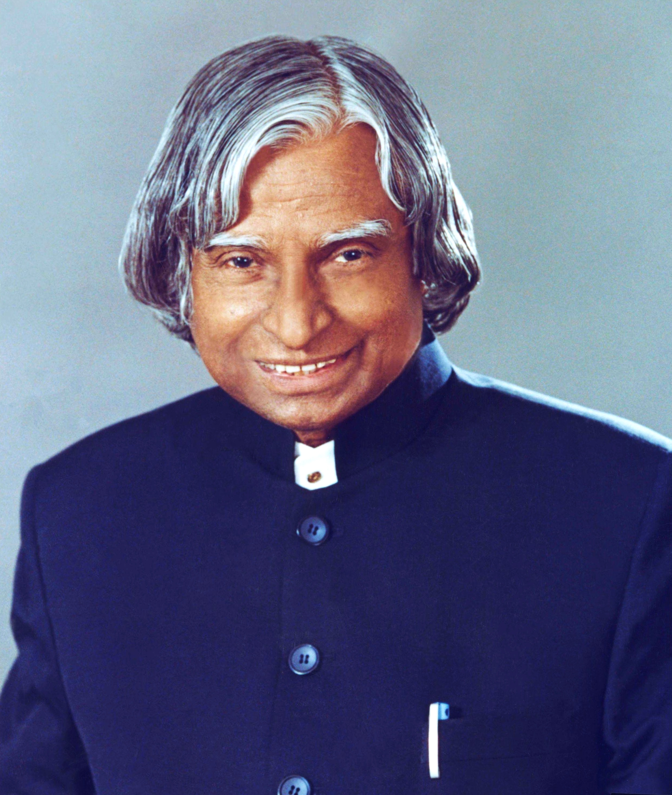

Dr. A.P.J Abdul Kalam
1931-2015
The Missile Man of India
Dr. Avul Pakir Jainulabdeen Abdul Kalam , popularly known as APJ Abdul Kalam, was one of India's most respected scientists, inspiring teachers, and visionary leaders. He was born on 15 October 1931 in Rameswaram, Tamil Nadu, India. Coming from a humble family, he worked hard from an early age and developed a deep interest in science, mathematics, and learning. Dr. Kalam studied aerospace engineering and made remarkable contributions to India's space and defence programs. He played an important role in developing India's missile technology, earning him the title “Missile Man of India.” He also contributed significantly to India's nuclear tests in 1998, helping strengthen the country's scientific and technological capabilities. In 2002, Dr. Kalam became the 11th President of India and served until 2007. He was widely admired as the “People's President” because of his simplicity, humility, and close connection with students and ordinary citizens. Throughout his presidency, he encouraged young people to dream big, work hard, and contribute to the development of the nation. Dr. Kalam was also a talented author who wrote several inspiring books, including Wings of Fire, Ignited Minds, and India 2020. His writings emphasized education, innovation, discipline, and the importance of building a developed India. He firmly believed that young people were the greatest strength of the country and that dreams could become reality through dedication, determination, and continuous effort. On 27 July 2015, Dr. Kalam passed away while delivering a lecture at the Indian Institute of Management Shillong. His life ended while doing what he loved most: teaching and inspiring students. Dr. APJ Abdul Kalam remains an enduring symbol of knowledge, patriotism, simplicity, and perseverance. His life teaches us that success is achieved through hard work, honesty, and a willingness to learn. His inspiring words, achievements, and vision continue to motivate millions of people to pursue their dreams and work towards a brighter future for India.
Biography
- Full Name: Dr. Avul Pakir Jainulabdeen Abdul Kalam
- Date of Birth: 15 October 1931
- Place of Birth: Rameswaram, Tamil Nadu, India
- Nationality: Indian
- Profession: Scientist, Author, Professor, and Former President of India
- Known As: Missile Man of India and People's President
- Presidency: 2002–2007
- Date of Death: 27 July 2015
- Place of Death: Shillong, Meghalaya, India